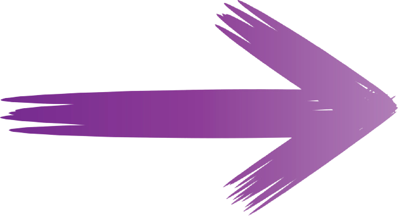
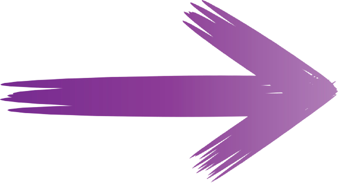

Galerie
Ziak
Eh gang
Schlass le plus excité, ils cavalent vers leur auto (han-han) T'as disparu, ils savent plus qui t'es, ça c'est des vrais potos (ha ha) On va pas t'rater, ils vont pas s'casser, ça c'est des vrais couteaux (pah) bébé, tous les hommes biens sont pris, mais ce soir leur alliance est dans la poche Alors claque tes fesses fais gonfler ton prix claque tes fesses fais gonfler ton prix (han-han) là j'suis dans des bails mystiques, pour s'faire soulever elle fait garder son p'tit j'vérifie que lеs mandats sont bien partis, mes copains sont les plus hеureux d'la cantine
Elle s'est déshabillée sec, two-step, two-step bébé veut son chèque Bébé veut son Coco Channel, Galerie Lafayette (mad) elle s'est déshabillée sec, two-step, two-step bébé veut son chèque (mad) Bébé veut son Coco Channel, Galerie Lafayette (j'aime bien)
J'aime beaucoup c'que tu proposes (en vrai j'aime bien) J'aime beaucoup c'que tu proposes (j'aime bien) J'aime beaucoup c'que tu proposes (en vrai j'aime bien) J'aime beaucoup c'que tu proposes
On a fait pire que l’bacon (mad), africain comme Akon Attends juste deux s'condes qu'on t'décolle, faut pas prendre la faucheuse pour une conne (paw, paw) Oh j'aime c'qu'elle donne, elle shake son boyo comme à Kingston (ha ha) On décale, juste toi, moi et l'pactole, j'pourrai enfin t'élever au rang de reine des folles J'ai le cœur en tôle ma jolie, tu peux rien rattraper Tes gars ils rentrent à oil-p, si ils passent au quartier Le pire est d'jà passé, des trous dans leurs vestes matelassées Depuis p'tits on ne pense qu'à brasser, machette Haïtienne, sak pasé Putain j'crois les porcs m'ont tracé, putain j'crois les porcs m'ont tracé (sa mère) T'es bien s'ils te mettent que l'bracelet, t'es bien s'ils t'mettent que l'bracelet Trois lames mais c'est pas pour s'raser, c'est maintenant ici qu'tu payes pour l'passé Les p'tits t'vendraient leurs pères pour d'la C, je l'ai même pas rincé, elle sait c'que j'sais, elle s'est, elle s'est, elle s'est
Elle s'est déshabillée sec, two-step, two-step bébé veut son chèque Bébé veut son Coco Channel, Galerie Lafayette (mad) Elle s'est déshabillée sec, two-step, two-step bébé veut son chèque (mad) Bébé veut son Coco Channel, Galerie Lafayette (j'aime bien)
J'aime beaucoup c'que tu proposes (en vrai j'aime bien) J'aime beaucoup c'que tu proposes (j'aime bien) J'aime beaucoup c'que tu proposes (en vrai j'aime bien) J'aime beaucoup c'que tu proposes
Mad Libérez tous mes copains